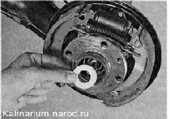
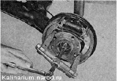
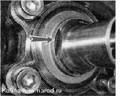
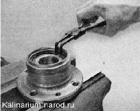
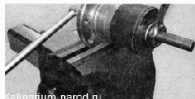
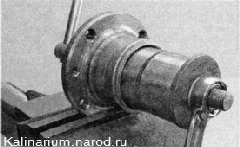
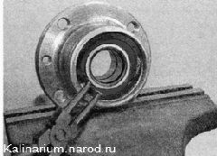
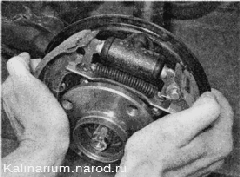

Подшипник ступицы заднего колеса - заменаДля выполнения работы потребуются: - двух- или трехзахватпый съемник; - съемник внутренних стопорных колец; - чашечный съемник. Снятие 1. Подготавливаем автомобиль к выполнению работы. 2. Ослабляем затяжку гайки ступицы заднего колеса аналогично тому, как это показано на переднем колесе. 3. Устанавливаем автомобиль на подставку, снимаем колесо и тормозной барабан. 4. Отворачиваем гайку и снимаем упорную шайбу гайки ступипы. 5. Съемником спрессовываем ступицу с оси вместе с подшипником. 
6. Если подшипник ступицы разрушился и его внутреннее кольцо осталось па оси, спрессовываем его двухзахватным съемником, установив его захваты в специальные выемки.  7. Устанавливаем ступицу в тиски. 8. Съемником сжимаем и извлекаем стопорное кольцо подшипника. 
9. Чашечным съемником выпрессовываем подшипник из ступицы.  Установка При запрессовке подшипника усилие можно прикладывать только к его наружному кольцу. 1. Используя наружное кольцо старого подшипника как оправку, съемником запрессовываем в ступицу новый подшипник. 
2. Съемником устанавливаем стопорное кольцо подшипника. 
3. Устанавливаем ступицу на ось. 4. Устанавливаем упорную шайбу и наживляем гайку ступицы. 5. Заворачивая гайку, напрессовываем подшипник на ось ступицы. 6. Устанавливаем тормозной барабан и колесо. 7. Опускаем автомобиль на колеса. 8. Затягиваем гайку ступицы моментом 186,3—225,6 П-м (19—23 кгс-м) и заминаем край гайки в проточку оси ступицы. 9. Устанавливаем колпак ступицы. |